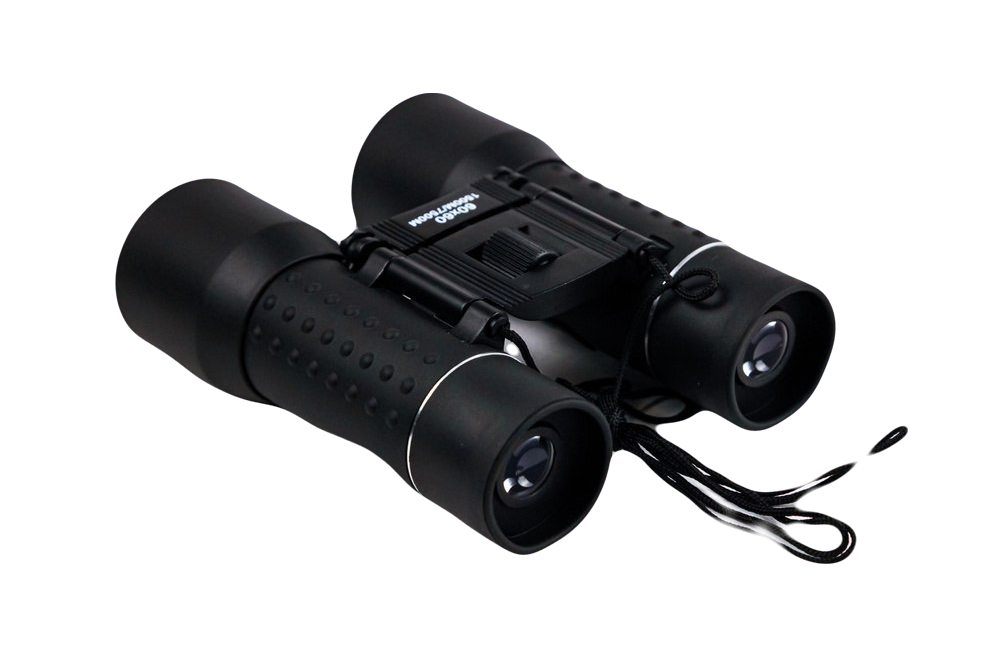
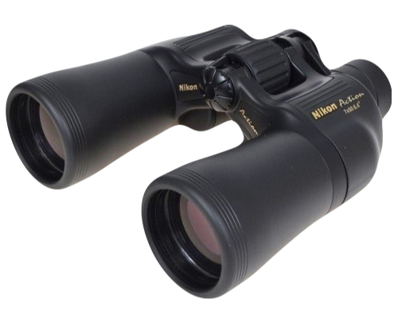
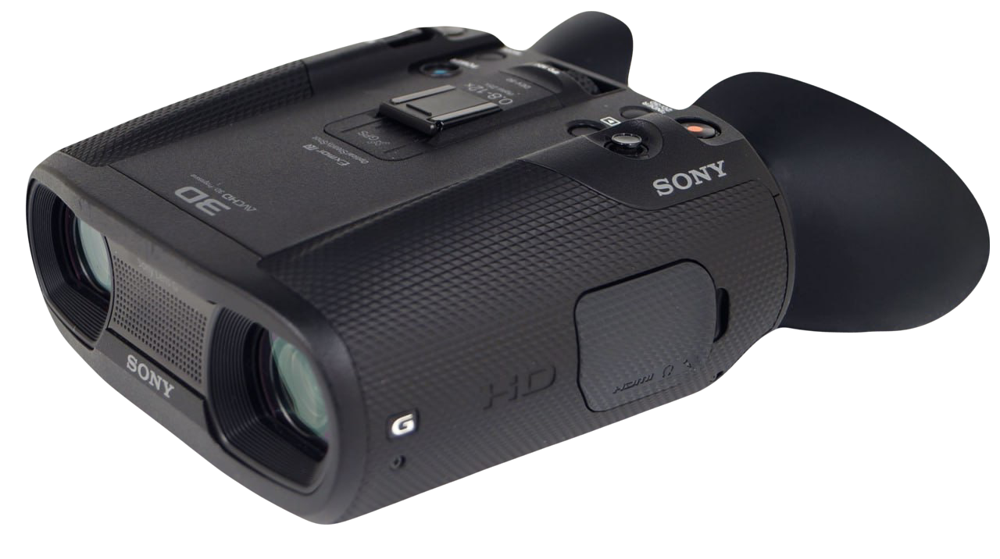

Компактный бинокль
Компактные бинокли имеют малый размер и вес, могут помещаться в кармане, сумочке или бардачке
автомобиля.
Главное их достоинство в малых размерах, но при этом они имеют небольшие объективы, малые увеличения
и
выходной зрачок. Они хороши днем для быстрой оценки ситуации, но не стоит на них рассчитывать в
условиях
пониженной освещенности. Тем не менее, они подходят также для детей и в качестве резервного
инструмента.

Стандартный бинокль
Стандартные бинокли можно использовать для множества применений общего характера, они хорошо
работают при
наблюдениях за живой природой, спортивными соревнованиями и т.п. Они могут не иметь всяческих
дополнительных
"украшений", зато универсальны и полезны, где бы ни пришлось их использовать. Также это хорошая
начальная
точка, чтобы решить, какие дополнительные возможности нужны при покупке следующего более серьезного
прибора.

Бинокль с цифровой камерой
Это бинокли, оснащенные встроенной цифровой камерой. Она может снимать интересующие вас сюжеты.
Качество, как
бинокля, так и камеры, может сильно варьироваться, и эти бинокли обычно более громоздки, тяжелы и
дороги.
Дополнительные принадлежности могут включать широкоугольные объективы, подсветку для ночной съемки и
запись
видео.
